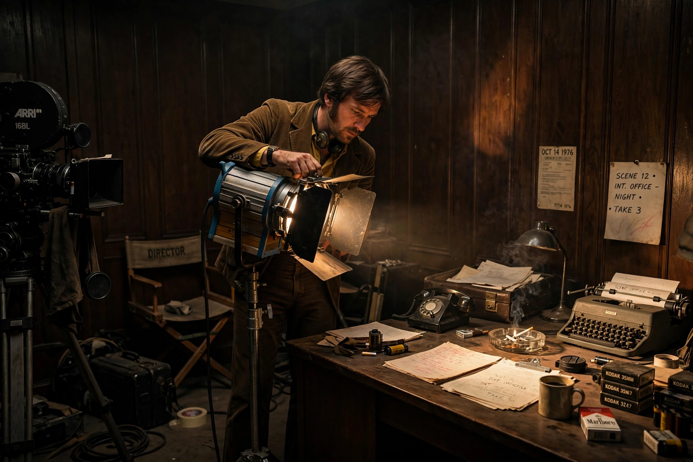

| Gordon Willis | |
| Born | May 28, 1931, New York City, U.S. |
|---|---|
| Died | May 8, 2014 (aged 82), North Falmouth, Massachusetts, U.S. |
| Occupation | Cinematographer |
| Years active | 1968–1997 |
| Awards | Honorary Academy Award (2009) |

Gordon Hugh Willis Jr., A.S.C. (May 28, 1931 – May 8, 2014) was an American cinematographer whose dark, underexposed photography for The Godfather (1972) and The Godfather Part II (1974) revolutionized studio filmmaking. Nicknamed the "Prince of Darkness", he was one of the defining image-makers of the New Hollywood era.
The son of a Warner Bros. makeup artist, Willis served in the Air Force photographic unit during the Korean War and worked his way up through the New York camera ranks. His breakthrough came with Francis Ford Coppola's The Godfather: Willis lit the film from overhead, underexposed deliberately, and printed it with warm, amber tones and deep shadow, over the studio's initial objections — an approach that visually encoded the Corleones' hidden world.
Through the 1970s Willis photographed a remarkable series of films: Alan J. Pakula's paranoia trilogy Klute (1971), The Parallax View (1974), and All the President's Men (1976), and Woody Allen's Annie Hall (1977) and the black-and-white Manhattan (1979), whose widescreen compositions became iconic. His final film was Pakula's The Devil's Own (1997).
Despite never winning a competitive Oscar — he was nominated for Zelig (1983) and The Godfather Part III (1990) — Willis received an Honorary Academy Award in 2009 for his "unsurpassed mastery of light, shadow, color and motion".